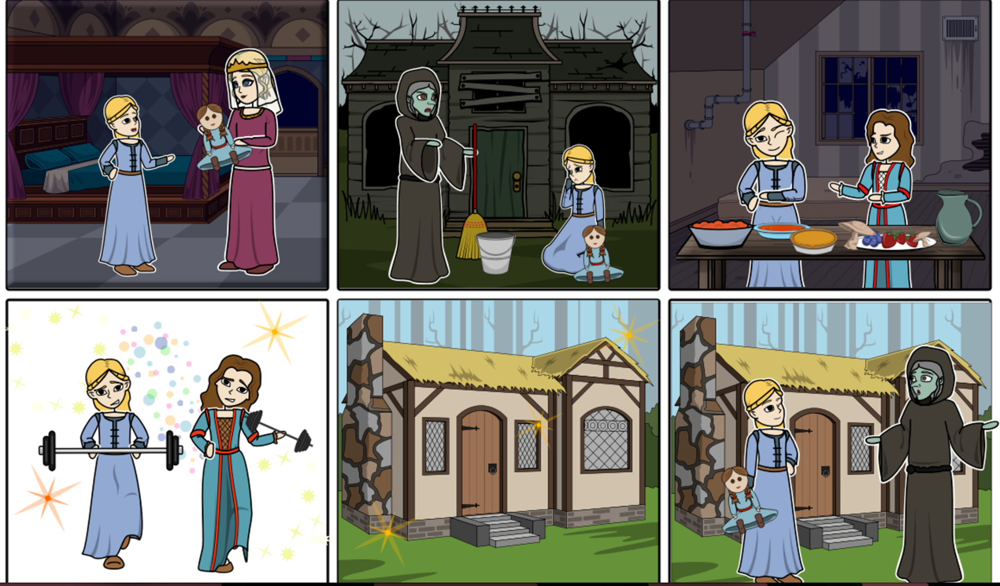

Vasilissa
Vasilissa is a young girl who inherits a magic doll from her mother. Soon after she gets lost in the woods by baba yaga, who promises to free her only if she completes impossible tasks, planning to never let her go. Little does baba yaga know, that when vasilissa and her doll eat healthy russian food from the forest ( explain whats safe/not safe), they become super strong, and are able to complete even the hardest tasks with ease! Vasilissa and her doll shock baba yaga and she's forced to keep her promise and let her go.
When baba yaga asks vasilissa how she managed to complete her impossible tasks she answers 'with the help of forest and its bounty'.